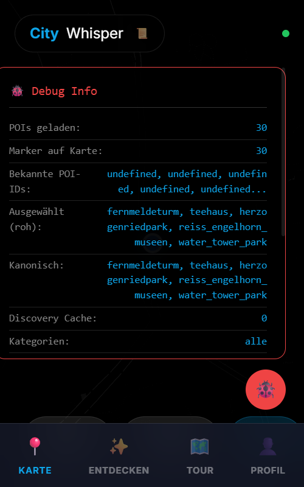
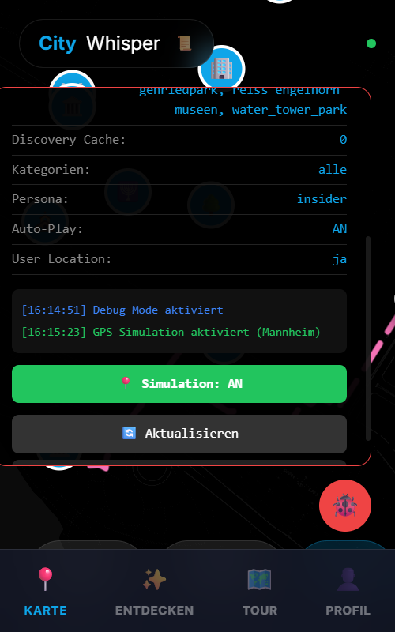
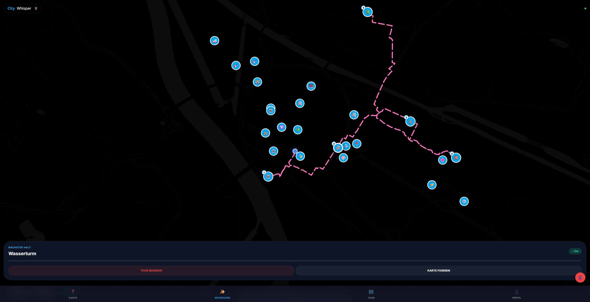
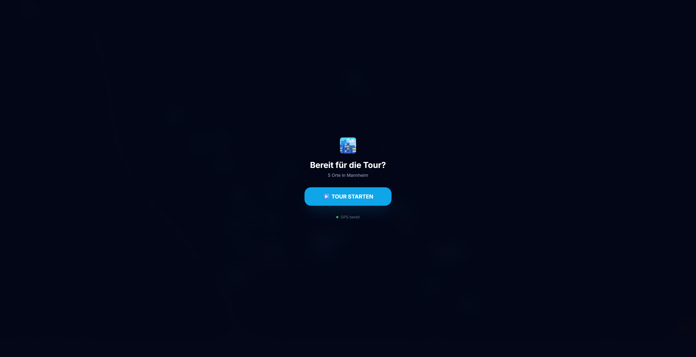

KI-Audio-Pipeline & Content-Engine
Das Herzstück von CityWhisper. Ich habe eine skalierbare Pipeline entwickelt, die Groq/Llama-3 nutzt, um für jeden Ort in Mannheim und Schönau dynamische, historisch fundierte Geschichten zu generieren.
- ✔ Persona-System: Implementierung von "Katja" (Insiderin) und "Killian" (Historiker) mit individuellen Sprachstilen.
-
✔
Neural TTS: Integration von
edge-ttsfür lebensechte, menschenähnliche Audio-Führungen. - ✔ Wikipedia-Bot: Automatisches Sourcing von Fakten zur Verifizierung der KI-Inhalte.

Bild-Discovery & Proxy-Infrastruktur
Um eine ansprechende visuelle Erfahrung zu bieten, ohne manuell Tausende Bilder zu pflegen, habe ich ein automatisiertes Discovery-System entwickelt.
- ✔ Multi-API Search: Abfrage von Wikipedia-REST und Unsplash für hochwertige POI-Fotos.
- ✔ Image Proxy Service: Eigenes Backend-System zur Umgehung von CORS und Opaque-Blocking.
- ✔ Smart Caching: Lokales Server-Caching zur Reduzierung von API-Kosten und Ladezeiten.

DAS NEUE UPDATE
Implementierung für den Mannheim-Feldtest (März 2026)
Active Tour Experience
Smart GPS Start & Simulation
Die Route startet nun exakt dort, wo der Nutzer steht. Für Remote-Tests habe ich einen GPS-Simulator integriert, der einen Standort in Mannheim vorgaukelt.
Active Tour Cockpit
Eine neue Oberfläche für die Straße: Distanzanzeige, Zielname und Fortschritt. Optimiert für die Hands-Free Nutzung in der Hosentasche via Geofencing.
Intelligente Sortierung
Automatisches Fallback auf Nearest-Neighbor Sortierung, falls die Mapbox-Optimierung fehlschlägt. Garantiert eine logische Wegführung.


Bereit für die Straße.
Erstellt von Pascal • März 2026 • CityWhisper Dev Team